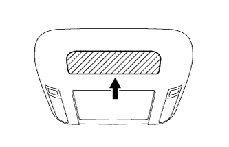
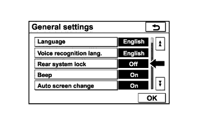

РАЗВЛЕКАТЕЛЬНО-ИНФОРМАЦИОННАЯ СИСТЕМА ДЛЯ ЗАДНИХ ПАССАЖИРОВ > Телевизионный дисплей не включается |
| 1.ОЧИСТИТЕ ПРИЕМНИК ИНФРАКРАСНОГО ИЗЛУЧЕНИЯ |
|  |
Очистите приемник инфракрасного излучения на телевизионном дисплее.
Проверьте, проявляется ли неисправность снова.
|
| ||||
| OK | ||
| ||
| 2.ПРОВЕРЬТЕ СИСТЕМУ |
Убедитесь, что работа пульта дистанционного управления системы не запрещена дисплеем модуля системы навигации и индикации.
|  |
Убедитесь, что на экране дисплея модуля системы навигации и индикации для параметра, запрещающего работу развлекательно-информационной системы для задних пассажиров, установлено значение Off (выкл).
|
| ||||
| OK | |
| 3.ПРОВЕРЬТЕ БАТАРЕЮ ПУЛЬТА ДИСТАНЦИОННОГО УПРАВЛЕНИЯ |
Убедитесь, что сухая батарея пульта дистанционного управления не разряжена.
|
| ||||
| OK | |
| 4.ЗАМЕНИТЕ ПУЛЬТ ДИСТАНЦИОННОГО УПРАВЛЕНИЯ |
Замените пульт дистанционного управления новым или заведомо исправным.
Убедитесь, что телевизионный дисплей в сборе включается.
|
| ||||
| OK | ||
| ||